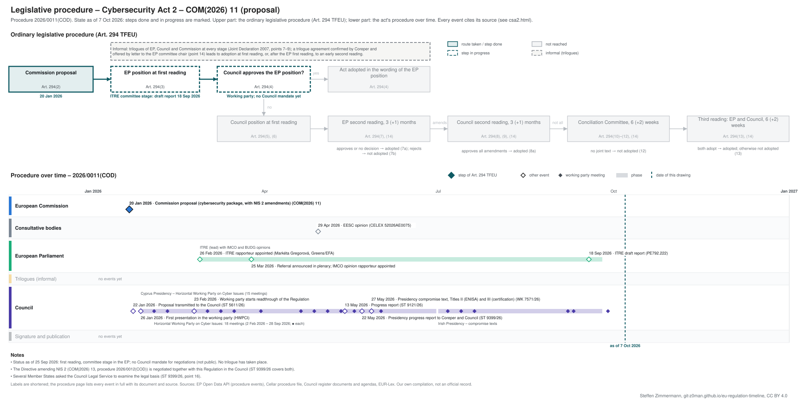

← Regulation timeline › Cybersecurity Act 2 › Legislative procedure · All procedures
Cybersecurity Act 2 – COM(2026) 11 (proposal)
Procedure 2026/0011(COD), ongoing, as of 7 Oct 2026. Drawing: SVG · PNG · PDF (A3) · draw.io · Page as Markdown: csa2.md


| Stage | EP committee stage |
|---|---|
| Parliament | draft report 18 Sep 2026 |
| Council | working party, latest document 2 Oct 2026 |
| Latest activity | 2 Oct 2026 · Council: Presidency third compromise text on Title III (European Cybersecurity Certification … (WK 15236/26) |
| Next steps | EP: amendments and committee vote on the report and mandate; Council: working party towards a negotiating mandate |

European Parliament committees
| Committee | Role | Rapporteur | Shadow rapporteurs |
|---|---|---|---|
| ITRE Industry, Research and Energy | Responsible | Markéta Gregorová (Greens/EFA), appointed 26 Feb 2026 | Tomas Tobé (EPP), Jens Geier (S&D), Aleksandar Nikolic (PfE), Diego Solier (ECR), Bart Groothuis (Renew), Marc Botenga (The Left), Markus Buchheit (ESN) |
| IMCO Internal Market and Consumer Protection | Opinion | Maria Guzenina (S&D), appointed 25 Mar 2026 | Dimitris Tsiodras (EPP), Reinis Pozņaks (ECR), Morten Løkkegaard (Renew) |
| BUDG Budgets | Budgetary assessment | Hélder Sousa Silva (EPP), appointed 28 Jan 2026 | Bogdan Rzońca (ECR), Nicolae Ștefănuță (Greens/EFA), Alexander Jungbluth (ESN) |
Source: EP Open Data API (participations) and the Legislative Observatory (joint committee, opinions declined); names link to each Member's page on the EP website. The API names no committee for shadow rapporteurs; they are assigned by the EP's order of participants, which groups each committee.
Events
| Date | Actor | Event | Document | Source |
|---|---|---|---|---|
| 20 Jan 2026 | European Commission | Commission proposal (cybersecurity package, with NIS 2 amendments) (Art. 294(2) TFEU) | COM(2026) 11 | Cellar (CELEX 52026PC0011) |
| 22 Jan 2026 | Council | Proposal transmitted to the Council | ST 5611/26 | Cellar procedure file; Council register (public document) |
| 26 Jan 2026 | Council | First presentation in the working party (HWPCI) | ST 9399/26 · en.md de.md | Council progress report ST 9399/26, point 7 |
| 2 Feb 2026 | Council | Horizontal Working Party on Cyber Issues: New Cybersecurity package: a) Evaluation report: – Presentation by … | CM 1440/26 REV 1 | Council register, CM 1440/26 REV 1 (notice of meeting and provisional agenda) |
| 9 Feb 2026 | Council | Horizontal Working Party on Cyber Issues: Presentation by the Commission of Title IV (Security of ICT supply … | CM 1519/26 | Council register, CM 1519/26 (notice of meeting and provisional agenda) |
| 23 Feb 2026 | Council | Working party starts readthrough of the Regulation | ST 9399/26 · en.md de.md | Council progress report ST 9399/26, point 9 |
| 26 Feb 2026 | European Parliament | ITRE rapporteur appointed (Markéta Gregorová, Greens/EFA) | EP procedure file | EP Open Data API (participation RAPPORTEUR); ST 9399/26, point 5 |
| 2 Mar 2026 | Council | Horizontal Working Party on Cyber Issues: Examination of the proposal (Articles 17 to 44) | CM 1817/26 | Council register, CM 1817/26 (notice of meeting and provisional agenda) |
| 9 Mar 2026 | Council | Horizontal Working Party on Cyber Issues: Examination of the proposal (Articles 44 – 70 and Articles 71 – 84) | CM 1932/26 REV 1 | Council register, CM 1932/26 REV 1 (notice of meeting and provisional agenda) |
| 16 Mar 2026 | Council | Horizontal Working Party on Cyber Issues: Examination of the proposal (Articles 70 – 97) | CM 1933/26 | Council register, CM 1933/26 (notice of meeting and provisional agenda) |
| 25 Mar 2026 | European Parliament | Referral announced in plenary; IMCO opinion rapporteur appointed | EP procedure file | EP Open Data API (referral; rapporteur opinion IMCO) |
| 30 Mar 2026 | Council | Horizontal Working Party on Cyber Issues: Examination of the proposal (Articles 82 – 97) doc. (5611/26) | CM 2210/26 | Council register, CM 2210/26 (notice of meeting and provisional agenda) |
| 20 Apr 2026 | Council | Horizontal Working Party on Cyber Issues: Examination of the proposal (Articles 98 – 117) doc. (5611/26) | CM 2430/26 | Council register, CM 2430/26 (notice of meeting and provisional agenda) |
| 27 Apr 2026 | Council | Horizontal Working Party on Cyber Issues: Examination of the proposal (Articles 98 – 117) doc. (5611/26) | CM 2546/26 | Council register, CM 2546/26 (notice of meeting and provisional agenda) |
| 29 Apr 2026 | Consultative bodies | EESC opinion | CELEX 52026AE0075 | Cellar (CELEX 52026AE0075); ST 9399/26, point 6 |
| 4 May 2026 | Council | Horizontal Working Party on Cyber Issues: Examination of the proposal (Articles 98 – 117) doc. (5611/26) | CM 2630/26 | Council register, CM 2630/26 (notice of meeting and provisional agenda) |
| 11 May 2026 | Council | Horizontal Working Party on Cyber Issues: Discussion on Articles 46 and 47 Examination of the proposal … | CM 2746/26 | Council register, CM 2746/26 (notice of meeting and provisional agenda) |
| 13 May 2026 | Council | Progress report | ST 9121/26 · en.md | Cellar procedure file 2026/11 (Council register) |
| 18 May 2026 | Council | Horizontal Working Party on Cyber Issues: Examination of the proposal: remaining Articles and Annexes – Draft … | CM 2801/26 REV 1 | Council register, CM 2801/26 REV 1 (notice of meeting and provisional agenda) |
| 22 May 2026 | Council | Presidency progress report to Coreper and Council | ST 9399/26 · en.md de.md | Council progress report ST 9399/26 |
| 27 May 2026 | Council | Presidency compromise text, Titles II (ENISA) and III (certification) | WK 7571/26 · en.md | Council register (public document) |
| 1 Jun 2026 | Council | Horizontal Working Party on Cyber Issues: Presentation and discussion of the compromise text (doc. to be … | CM 2973/26 REV 1 | Council register, CM 2973/26 REV 1 (notice of meeting and provisional agenda) |
| 6 Jul 2026 | Council | Horizontal Working Party on Cyber Issues: Discussion of the Presidency compromise text regarding Title II … | CM 3480/26 REV 1 | Council register, CM 3480/26 REV 1 (notice of meeting and provisional agenda) |
| 13 Jul 2026 | Council | Horizontal Working Party on Cyber Issues: Discussion of the Presidency compromise text regarding Title III … | CM 3553/26 | Council register, CM 3553/26 (notice of meeting and provisional agenda) |
| 20 Jul 2026 | Council | Horizontal Working Party on Cyber Issues: Presentation of the Presidency plans regarding Title IV (Security … | CM 3558/26 | Council register, CM 3558/26 (notice of meeting and provisional agenda) |
| 7 Sep 2026 | Council | Horizontal Working Party on Cyber Issues: Interplay between CADA and CSA21 – Presentation by the Commission … | CM 3831/26 | Council register, CM 3831/26 (notice of meeting and provisional agenda) |
| 10 Sep 2026 | Council | Horizontal Working Party on Cyber Issues: Cyber posture – Presentation by the Commission and discussion | CM 3845/26 | Council register, CM 3845/26 (notice of meeting and provisional agenda) |
| 18 Sep 2026 | European Parliament | ITRE draft report | PE792.222 · en.md de.md | EP Open Data API (ITRE-PR-792222) |
| 28 Sep 2026 | Council | Horizontal Working Party on Cyber Issues: Title IV (ICT Supply Chain) – Discussion (WK 14487/26 + ADD1) | CM 4269/26 | Council register, CM 4269/26 (notice of meeting and provisional agenda) |
Notes
- Status as of 25 Sep 2026: first reading, committee stage in the EP; no Council mandate for negotiations (not public). No trilogue has taken place.
- The Directive amending NIS 2 (COM(2026) 13, procedure 2026/0012(COD)) is negotiated together with this Regulation in the Council (ST 9399/26 covers both).
- Several Member States asked the Council Legal Service to examine the legal basis (ST 9399/26, point 16).
Documents
Every document the Council register, the EU database of the Parliament of Austria or the EP lists for the procedure, with its state: public documents link to the official file; documents that are not public link to their entry in the Austrian database where there is one (metadata only). Status: public; not public; not public, leak available (an unofficial copy is known to circulate outside the institutions; it is neither published nor quoted here). Released: when a document listed as not public was released, by the date of the Council's public PDF (a technical date) or else the day our daily check found it public.
| Date | Document | Kind | Subject | Status | Released | Text |
|---|---|---|---|---|---|---|
| 22 Jan 2026 | ST 5611/26 | Council: transmission note | Proposal for a Regulation of the European Parliament and of the Council on the European Union Agency for Cybersecurity (ENISA), the European cybersecurity … | public | – | – |
| 22 Jan 2026 | ST 5611/26 ADD 1 | Council: transmission note | Annexes to the Proposal for a Regulation of the European Parliament and of the Council on the European Union Agency for Cybersecurity (ENISA), the European … | public | – | – |
| 22 Jan 2026 | ST 5611/26 ADD 2 | Council: transmission note | Commission staff working document executive summary of the impact assessment report Accompanying the documents Proposal for a Regulation of the European … | public | – | – |
| 22 Jan 2026 | ST 5611/26 ADD 3 | Council: transmission note | Regulatory scrutiny board opinion - Cybersecurity Act Review | public | – | – |
| 22 Jan 2026 | ST 5611/26 ADD 4 | Council: transmission note | Commission staff working document impact assessment report Accompanying the documents Proposal for a Regulation of the European Parliament and of the Council … | public | – | – |
| 2 Feb 2026 | WK 1616/26 | Council note | New Cybersecurity package - Presentation by the Commission | public | – | – |
| 5 Feb 2026 | WK 1942/26 | Council note | New cybersecurity package: correspondence tables of articles and recitals | not public* | – | – |
| 10 Feb 2026 | WK 2167/26 | Council note | Presentation by the Commission of Title IV (Security of ICT supply chains) CSA2 - Presentation by the Commission of the proposal for a Directive amending NIS 2 | not public* | – | – |
| 17 Feb 2026 | ST 5611/26 ADD 3 REV 1 | Council: transmission note | Regulatory scrutiny board opinion - Cybersecurity Act Review | public | – | – |
| 10 Mar 2026 | WK 3703/26 | Council note | Template for the submission of drafting suggestions on Articles 1-70 | public | 2 Oct 2026 | – |
| 19 Mar 2026 | ST 7519/26 | Council note | Joint opinion of the European Data Protection Board and European Data Protection Supervisor | public | – | – |
| 24 Mar 2026 | ST 7558/26 | Council note | Optional consultation of the Committee of the Regions | public | 2 Oct 2026 | – |
| 1 Apr 2026 | WK 4947/26 | Council note | Template for the submission of drafting suggestions on Articles 71-97 | public | – | – |
| 7 Apr 2026 | WK 4972/26 | Council note | Austria's and Member States' consolidated comments on Article 1-70 | public | – | – |
| 20 Apr 2026 | ST 8339/26 | Council note | Opinion on the application of the Principles of Subsidiarity and Proportionality - Cover note from the Spanish Parliament | not public* | – | – |
| 22 Apr 2026 | WK 5353/26 | Council note | Consolidated comments from Austria and other Member States on Articles 71-97 | public | 2 Oct 2026 | – |
| 29 Apr 2026 | CELEX 52026AE0075 | Opinion | Opinion of the European Economic and Social Committee a) Proposal for a Regulation of the European Parliament and of the Council on the European Union Agency … | public | – | – |
| 6 May 2026 | ST 8980/26 | Council note | Opinion of the European Economic and Social Committee | public | – | – |
| 8 May 2026 | WK 6627/26 | Council note | Presentation by the Commission | public | – | – |
| 12 May 2026 | WK 6725/26 | Council note | Presentation by the Commission on Articles 46 (Structure of ENISA's budget) and 47 (Fees) | not public* | – | – |
| 12 May 2026 | WK 6727/26 | Council note | Presentation by the Commission on ICT supply chains in electronic communication networks (Articles 110 and 111) | public | – | – |
| 13 May 2026 | ST 9121/26 | Council: progress report | Progress report Our summary: Progress report of the Cyprus Presidency of 13 May 2026 on CSA2 and the NIS-2 amendment, for Coreper and the Council to take note of; it is not a Council position. Member States generally support the proposal's objectives but ask for clarification of ENISA's new operational tasks, its resources and budget, and the certification deadlines. On the ICT supply chain framework they ask how key ICT assets and high-risk suppliers are identified and want more involvement of Member States; several entered scrutiny reservations, notably on governance, implementing acts and the high-risk supplier mechanism, and some asked the Council Legal Service to examine the legal basis. Updated 4 Oct 2026: Reviewed against the later progress report ST 9399/26 of 22 May 2026, the version of the same report for Coreper and the Council: same state of play, with added background (Council conclusions on ENISA of 6 December 2024, the 'One Europe, One Market' roadmap of 24 April 2026). No change to the findings. (source: ST 9399/26) | public | 2 Oct 2026 | en |
| 13 May 2026 | ST 9238/26 | Council note | [5611/26 - COM(2026) 11 final] - Reasoned opinion on the application of the Principles of Subsidiarity and Proportionality - Cover note from the Parliament of … | not public* | – | – |
| 13 May 2026 | ST 9257/26 | Council note | [5611/26 - COM(2026) 11 final] Proposal for a Directive of the European Parliament and of the Council amending Directive (EU) 2022/2555 as regards … | not public* | – | – |
| 18 May 2026 | WK 6913/26 | Council note | EU cybersecurity certification of cyber posture - Presentation by the Commission | public | – | – |
| 19 May 2026 | ST 9358/26 | Council note | Reasoned opinion on the application of the Principles of Subsidiarity and Proportionality - Cover note from the French Senate | not public* | – | – |
| 19 May 2026 | WK 7007/26 | Council note | Template for the submission of drafting suggestions for Articles 98-122 | public | 2 Oct 2026 | – |
| 22 May 2026 | ST 9399/26 | Council: progress report | Progress report | public | – | en de |
| 27 May 2026 | WK 7571/26 | Council: Presidency compromise text | Presidency compromise text Titles II and III | public | – | en |
| 2 Jun 2026 | ST 9972/26 | Council note | Reasoned opinion on the application of the Principles of Subsidiarity and Proportionality - Cover Note from the Senate of the Parliament of the Czech Republic | not public* | – | – |
| 2 Jul 2026 | WK 5879/26 | Council note | Member States' consolidated comments on Articles 98-122 | public | – | – |
| 2 Jul 2026 | WK 9878/26 | Council note | Template for the submission of drafting suggestions on Articles 3-70 | public | 2 Oct 2026 | – |
| 3 Jul 2026 | WK 9938/26 | Council note | Template for the submission of drafting suggestions | public | 2 Oct 2026 | – |
| 6 Jul 2026 | WK 10025/26 | Council note | Priorities of the Irish Presidency for cybersecurity - Presentation by the Presidency | public | 2 Oct 2026 | – |
| 17 Jul 2026 | WK 10695/26 | Council note | Title IV: Security of ICT Supply Chains: Guiding questions | public | 2 Oct 2026 | – |
| 22 Jul 2026 | WK 10888/26 | Council note | German non-paper | public | – | – |
| 24 Jul 2026 | WK 10993/26 | Council note | Proposal by the French authorities to strengthen Title IV of the Cybersecurity Act 2 (CSA2) and build a Union Cybersecurity trusted framework | not public* | – | – |
| 28 Jul 2026 | WK 11019/26 | Council note | Comments from Austria and other Member States on Articles 3 - 70 | public | 2 Oct 2026 | – |
| 29 Jul 2026 | WK 11064/26 | Council note | Comments from Austria and other Member States on Articles 71-97 (certification) | public | 2 Oct 2026 | – |
| 7 Aug 2026 | WK 11263/26 | Council: Presidency compromise text | Presidency second compromise text Title III Our summary: Presidency second compromise text of 7 August 2026 on Title III of the CSA2 proposal (European cybersecurity certification framework, Articles 71-97), following WK 7571/26; a draft, not law. It changes 42 provisions, mainly on how certification schemes are requested and prepared: feasibility studies by ENISA move from the recitals into Article 72, the ECCG can ask the Commission to request a candidate scheme (Article 73), ENISA has 12 months to prepare one unless the request sets another timeframe (Article 74), and the appeal against decisions of notified conformity assessment bodies becomes a separate Article 94a. Title IV (ICT supply chain security, high-risk suppliers) is reproduced unchanged from the Commission proposal, so the higher number of mentions of high-risk suppliers reflects a wider text, not a change. | public | 2 Oct 2026 | en |
| 7 Aug 2026 | WK 11265/26 | Council note | Template for the submission of drafting suggestions on the Presidency second compromise text on Title III (European Cybersecurity Certification Framework, … | public | 2 Oct 2026 | – |
| 4 Sep 2026 | WK 13545/26 | Council note | Cybersecurity Act 2: explanatory note on Title III (European Cybersecurity Certification Framework) | not public* | – | – |
| 7 Sep 2026 | WK 13637/26 | Council note | Interplay between CADA and CSA2 - Presentation | not public* | – | – |
| 8 Sep 2026 | WK 13671/26 | Council: Presidency compromise text | Presidency second compromise text Title II (ENISA) | not public* | – | – |
| 8 Sep 2026 | WK 13734/26 | Council note | Template for the submission of drafting suggestions | not public* | – | – |
| 10 Sep 2026 | WK 13885/26 | Council note | Title IV: Security of ICT Supply Chains: Guiding questions - Member States' answers | not public* | – | – |
| 11 Sep 2026 | WK 13873/26 | Council note | Cyber posture - Presentation by Spain | not public* | – | – |
| 11 Sep 2026 | WK 13875/26 | Council note | Cyber posture - Presentation by France | not public* | – | – |
| 11 Sep 2026 | WK 13876/26 | Council note | Cyber posture - Presentation by Belgium | not public* | – | – |
| 11 Sep 2026 | WK 13879/26 | Council note | Cyber posture - Presentation by the Commission | not public* | – | – |
| 14 Sep 2026 | WK 13973/26 | Council note | Title IV: Security of ICT Supply Chains: Guiding questions - Non-Paper by EE, FI, NL, PL and SE | not public* | – | – |
| 18 Sep 2026 | PE792.222 | EP draft report (rapporteur) | DRAFT REPORT on the proposal for a regulation of the European Parliament and of the Council on the European Union Agency for Cybersecurity (ENISA), the … | public | – | en de |
| 21 Sep 2026 | WK 14487/26 ADD 1 | Council: Presidency compromise text | Presidency first compromise text on Title IV (Security of ICT Supply Chains) | not public* | – | – |
| 21 Sep 2026 | WK 14493/26 | Council note | Presidency presentation of Title II amendments | not public* | – | – |
| 22 Sep 2026 | WK 14487/26 | Council: Presidency compromise text | Presidency first compromise text Title IV (Security of ICT Supply Chains) Our summary (Not public: not released by the institution and unofficially leaked; we neither publish nor quote it. Our summary describes it in general terms only.): Presidency compromise text of September 2026 on the CSA2 proposal, probably WK 14487/26: the Presidency's first compromise text on Title IV (ICT supply chain security, including the identification of high-risk suppliers), together with its texts on Titles II and III, for the Horizontal Working Party on Cyber Issues of 28 September 2026. A working document of the Presidency, not a position of the Council and not law. The Council has released earlier Presidency compromise texts on this file some months after the meeting (WK 7571/26, WK 11263/26), so an official release is likely but not certain. | not public, leak available* | – | – |
| 22 Sep 2026 | WK 14500/26 | Council note | Explanatory note on Title IV (Security of ICT Supply Chains) | not public* | – | – |
| 22 Sep 2026 | WK 14518/26 | Council note | Template for the submission of drafting suggestions for the recitals and Articles 98-122 of the first Presidency compromise | not public* | – | – |
| 24 Sep 2026 | WK 14696/26 | Council note | Template for the submission of drafting suggestions on the first Presidency compromise (Recitals and Title IV) | not public* | – | – |
| 25 Sep 2026 | WK 14801/26 | Council note | Consolidated comments from Austria and other Member States on Presidency second compromise text on Title III (Certification), Article 71-97 | not public* | – | – |
| 29 Sep 2026 | WK 14896/26 | Council note | Comments from Austria and other Member States on Recitals 1-172 and Articles 1-70 of the second Presidency compromise text | not public* | – | – |
| 30 Sep 2026 | WK 15065/26 | Council note | Title IV (ICT Supply Chain) - Presentation by the Presidency | not public* | – | – |
| 2 Oct 2026 | WK 15236/26 | Council: Presidency compromise text | Presidency third compromise text on Title III (European Cybersecurity Certification Framework, Articles 71-97) | not public* | – | – |
| 2 Oct 2026 | WK 15266/26 | Council note | Template for the submission of drafting suggestions (Presidency third compromise – recitals and Title III (Certification)) | not public* | – | – |
* Not public: the registers are checked again daily until the document is released; last check 9 Oct 2026.
Texts as Markdown
Unofficial Markdown conversions for reading, searching and project folders; only the official document is authentic. "Read" opens the rendered text on GitHub, where a link to a provision (#art-13, #rec-12, #annex-i) jumps to it.
| Date | Stage | Document | Markdown | Read |
|---|---|---|---|---|
| 20 Jan 2026 | Commission proposal | CELEX 52026PC0011 | en de | GitHub |
| 13 May 2026 | Council: progress report | ST 9121/26 | en | GitHub |
| 22 May 2026 | Council: progress report | ST 9399/26 | en de | GitHub |
| 27 May 2026 | Council: Presidency compromise text | WK 7571/26 | en | GitHub |
| 7 Aug 2026 | Council: Presidency compromise text | WK 11263/26 | en | GitHub |
| 18 Sep 2026 | EP draft report (rapporteur) | PE792.222 | en de | GitHub |